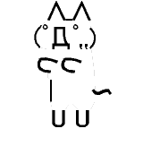
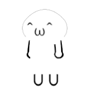

{{ $t("ui.site_name") }}
User Name:


Login
{{ $t("change_log") }}
{{ $t("msg.connection_lost") }}
{{ $t("msg.room_unavailable") }}
{{ $t("ui.infobox_label_area") }}
{{ $t("ui.infobox_value_area") }}
{{ $t("ui.infobox_label_room") }}
{{ $t("room."+roomid) }}
{{ $t("ui.infobox_label_user_name") }}
{{ myUserID && users && users[myUserID] ? users[myUserID].name : '-' }}
{{ $t("ui.infobox_label_user_count") }}
{{ serverStats.userCount }}
{{ $t("ui.label_input") }}
{{ $t("ui.button_send") }}
{{ $t(isSoundEnabled ? "ui.button_toggle_sound_on" : "ui.button_toggle_sound_off") }}
←
↑
↓
→
{{ $t("ui.button_switch_language") }}
{{ $t("ui.label_log") }}
{{ $t("ui.label_streamer") }} {{ users[streamSlot.userId].name }}
{{ $t("ui.volume") }}
{{ $t("ui.label_stream_start") }}
📹
🎤
📹 ➕ 🎤
{{ $t("ui.button_stream_stop") }}
{{ $t("ui.button_stream_get") }}
{{ $t("ui.button_stream_stop_getting") }}
{{ $t("room." + roomId) }}
{{ $t("ui.cancel")}}